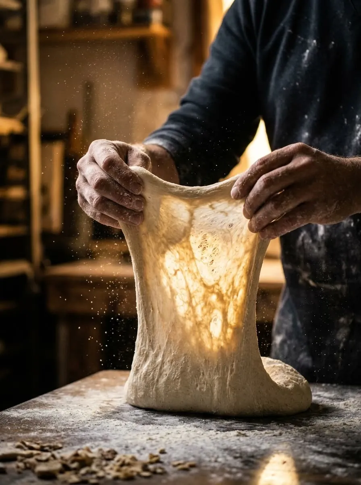

Дай тісту
час.
Пекарня і кав'ярня в центрі Києва. Випікаємо щоранку з 5:00, щоб до відкриття все було ще тепле.
Дивитися меню
Про нас
Хліб не любить поспіху.
Proof почався з кухонної печі і закваски від бабусі. Спершу пекли для друзів, потім для сусідів, а одного ранку відкрили двері. Відтоді нічого не змінилося: тісто, час і добрі інгредієнти.
Повільне тісто
Не прискорюємо те, що має дозріти. Смак з'являється саме там.
Мало, але свіже
У вітрині тільки те, що випекли сьогодні.
Кава під випічку
До кожної булочки підбираємо напій, з яким вона найсмачніша.
Розклад печі
Сьогодні
з печі
Кожен день свій розклад. Що вже готове, підсвічено.
Закінчується, то закінчується. Завтра випечемо знову.
Далі
11:30
Хліб на заквасці
--:--
Атмосфера